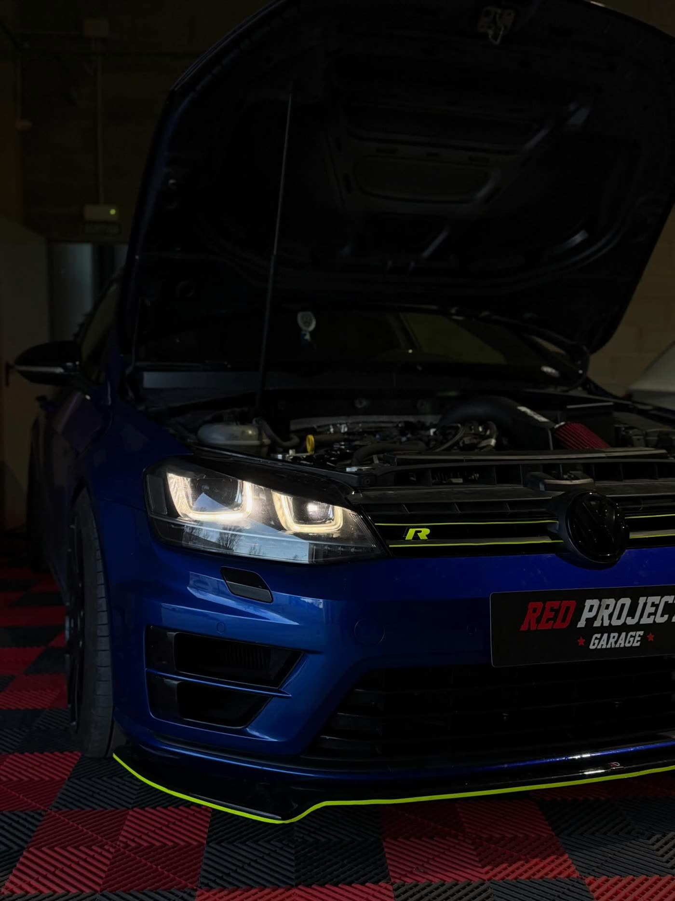
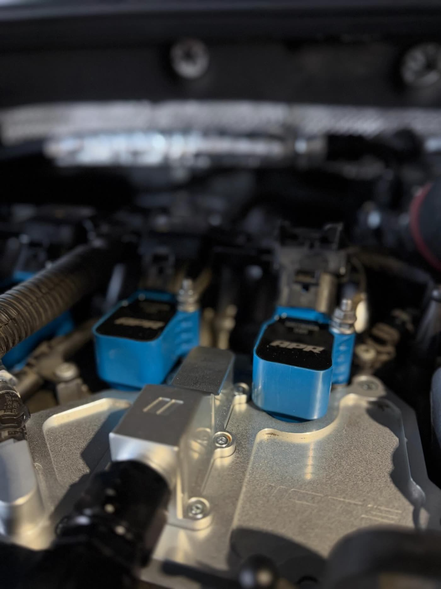
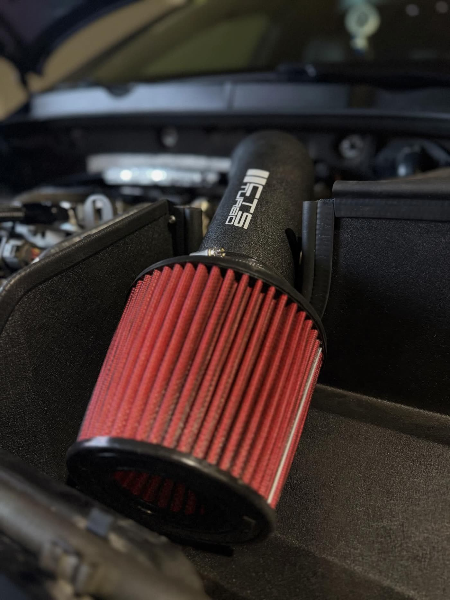
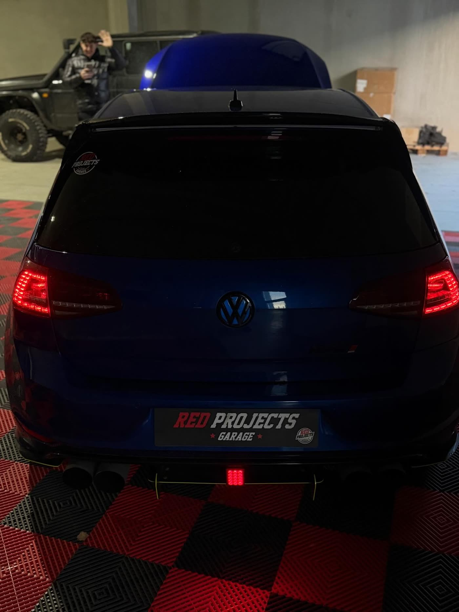

Golf 7 R
El projecte d'en Roger. Temps, esforç i dedicació, peça a peça.
- Intercooler, tuberies, inlet i muffler Do88
- Admissió i decantador CTS
- Radiador d'oli Bar-Tek
- Bobines APR · bugies NGK Racing
- Llantes Rotiform 19" · molles H&R
- Lip Maxton, aleró i volant de carboni
- Downpipe i escapament amb vàlvules de 3" Red Projects